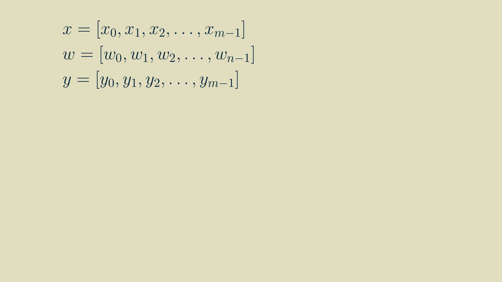
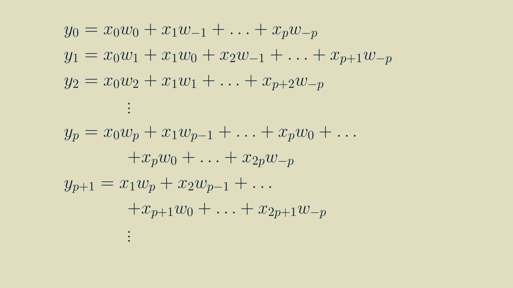

Neural networks can now tell with reasonable accuracy whether a photo contains a dog. Not only that, but it can tell you what breed of dog it is more accurately than most humans. The mathematical magic that makes this possible is convolution. It endows the neural network with the ability to recognize particular patterns within the pixels so that it can distinguish a dalmatian from a dachshund.
Convolution is a good way to identify patterns in data that is directly tied to space or time. Adjacent pixels in an image are adjacent for a reason. In the physical world, they collect light from neighboring locations. Time series data has a similar structure. Neighboring data points were produced close together in time and are much more likely to be related then points far apart. This inherent structure is what convolution exploits. It finds local patterns that reoccur in the data. It would not be effective, for instance, if we first scrambled the pixels in an image. That would hide the patterns, the spatial relationships, that convolution tries to learn.
The math behind convolution is an artful combination of multiplication and addition. We can best get a feel for convolution by looking at a one dimensional signal. In this animation, we see a shorter sequence, the kernel, being convolved with a longer sequence, the signal. The math behind convolution doesn’t actually care which of these is longer, but it is convenient for us to assign this convention as we develop them for neural networks.

The recipe for convolution is surprisingly short:
- Flip the kernel left to right
- Step the kernel along the signal one data point at a time
- At each position, calculate the dot product of the two
- 3.1 Multiply each pair of aligned values together
- 3.2 Add up those products
- The resulting sequence of dot products is the convolution of the kernel with the signal
The formal definition of convolution extends from minus infinity to plus infinity. You can imagine both the signal and the kernel being padded with zeros out forever in both directions. The only non-zero values come when there is any overlap between the non-zero parts of the signal and the kernel.
In practice, you can choose to keep every part of the convolution that is non-zero, or you can limit your results to just those convolution values where the kernel completely overlaps the signal. You can also choose a compromise, which is to trim the convolution result to be the same length as the signal. For simplicity of implementation, we'll use this last option for neural networks.
These three options are all available
using numpy‘s convolve() function. You can specify
mode="full" to keep all the non-zero values,
mode="valid" to only keep the completely overlapping
values, or mode="same" to ensure the result is the
sampe length as the signal.
We will be working with the mode="same" condition.
We can rewrite this visualization as a sequence of equations. We will start by specifying that our signal, x is of length m, our kernel, w, is of length n and both are made up of real values. The result, y will look just like x.

To simplify the notation for ourselves later, we will add the additional constraint that n is odd, and that the length of our kernel can also be expressed as 2p+1. p in this case is a little less than half the length of the kernel. For a kernel with n=5,p would be 2.
